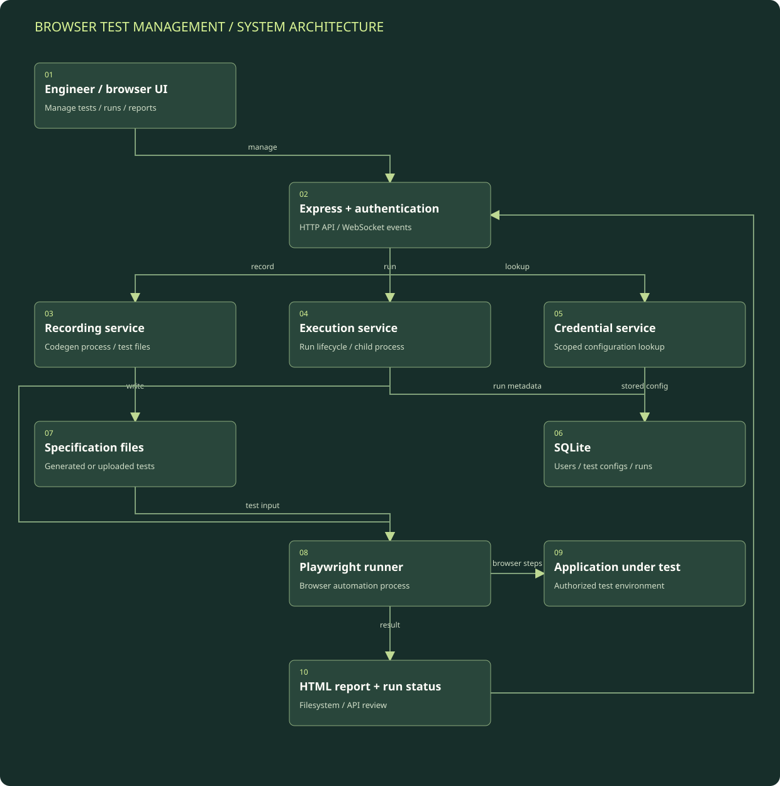

Authenticate and choose a test workflow
The Express application handles login and authenticated routes. The user can manage a test configuration, upload a test, or request a recording.
Detailed architecture / Synthetic monitoring and validation
A Node.js and Express test-management application that organizes Playwright recording, test execution, stored configurations, and HTML results.
Component layout and data flow.
Boxes represent logical modules and external systems; they do not imply a separate server for each box. On a narrow screen, scroll the diagram horizontally or open the full-size SVG. The tables below provide a text equivalent.

| Component | Responsibility | Boundary / qualification |
|---|---|---|
| Express and WebSocket layer | Exposes authenticated management routes and lifecycle notifications. | Client details and application targets are not part of the public diagram. |
| Recording service | Creates configuration and manages a code-generation subprocess. | Runtime compatibility is separate from the presence of a recording route. |
| Execution service | Prepares the environment and starts the Playwright runner. | The inspected batch loop is sequential; an isolated distributed test fleet is not claimed. |
| SQLite and local files | Store metadata, test definitions, and report artifacts. | The architecture is locally stateful, not a database-free static app. |
| Playwright and target | Execute browser actions against an authorized application environment. | This portfolio now documents that path; it does not run the original test suite publicly. |
The Express application handles login and authenticated routes. The user can manage a test configuration, upload a test, or request a recording.
The recording service creates configuration metadata and launches a Playwright code-generation process. Uploaded/generated definitions are stored as test specification files.
The execution service looks up the configuration, creates a run entry, prepares the run environment, and invokes the Playwright test command.
The child process executes the selected specification. Process output, completion, and errors are used to update the run result; batch execution iterates through selected tests.
Run metadata is retained in SQLite. The application exposes status/history and an HTML report path, with WebSocket events for parts of the recording and execution lifecycle.